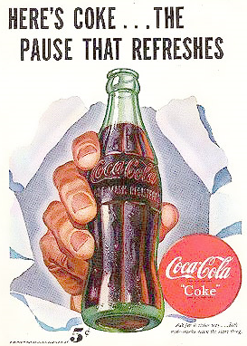
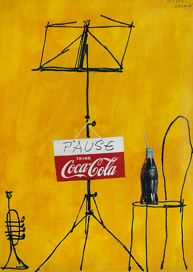
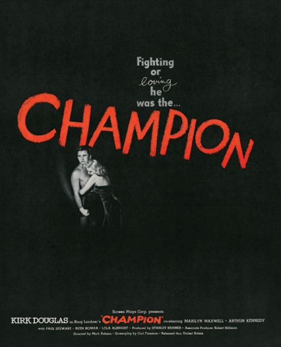
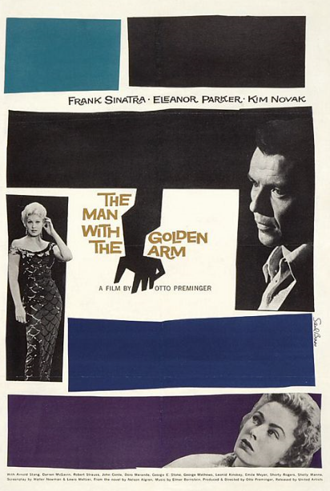

Saul Bass
Did Saul bass Impact Graphic Design ?
Saul Bass was one of the most successful and influential graphic designer in the 20th century. Bass’s work is iconic which led him to brand for a vast array of companies with many of his original designs still being used today. His most prominent achievements was his work with minimal posters and title sequences that were used in the film industry. His style was so distinctive that it made film posters more visually appealing, and completely changed the way filmmakers use title credits. For this essay, I will be looking at how he has impacted modern graphic design and filmography. To answer this question, I will be looking at his life and how he established his career in graphic design, his style, his success in graphic design, artists who have inspired him, and finally analysing his work in order to comprehend its significance. This will allow me to fully understand how much of an impact he has had on modern graphic design.
Early Life
Saul Bass was born on May 8, 1920, New York, United States, to Jewish parents from Eastern Europe. Once he graduated from High School he turned his attentions towards studying art. He took part-time classes at the Art Students League in Manhattan, then later attended night classes with György Kepes at Brooklyn College. During the 1940s he did work for film advertisements in Hollywood. In fact, in 1952 he started up his own practice and allowing him to established his own private company called Saul Bass & Associates. This would be the foundation of his success because it led to him to collaborate with filmmaker Otto Preminger to design a film poster for his 1954 film, “Carmen Jones”. Otto Preminger was so captivated with Bass's work that he asked him to design and produce a title for the film as well. This was the first time he was given the opportunity to create a title sequence, Bass realized the creative potential of the opening and closing of credits of a film and the effect it I could have on the audience.
His Style
To understand his impact, I decided to look at some of his work and focus more specifically the style he uses. Firstly, his style was very distinctive because of his minimalistic approach using simple shapes and limited colours in his designs reminiscent to the work of Josef Mϋller Brockmann. This was heavily influenced by the Bauhaus fundamentals mainly because of György Kepes who was a teacher of the New Bauhaus. Therefore many of his pieces had these traits which impressed advertising companies because
“... his graphic work resembled no one else’s in Hollywood.”- Saul Bass Anatomy of Film Design.
Furthermore, the society he grow up in also played a major factor for his style of art he was interested in. During the 1920’s and 1930’s, Bass grew up in New York and was surrounded by advertisements from magazines to street signs, which portrayed bold images of products like Coca Cola. As a child he was astounded by these images, which was a part of the American pop culture that he was growing up in, that it encouraged him into graphic design. This combination of Bauhaus ideals and graphical images resulted in a style that was so unique especially for the work he created in the film industry.
Furthermore, Bass became obsessed by Bauhaus design philosophies, as communicated in two inspiring books, “Moholy-Nagy’s The New Vision: From Material to Architecture” and, “Gyorgy Kepes’s The Language of Vision”. Bass wanted to use the Bauhaus aesthetics and apply it to the American style in his upcoming work. However, these styles are completely different and therefore we need to understand these differences.
 For example, here are two Coca Cola posters, the first one was created by an American graphic designer in 1947 and the second from Herbert Leupin, a Swiss graphic designer, in 1953. As you can see from these two posters that the style of art is completely different, for example, the American designer has taken a more realistic looking approach compared to the more contemporary Swiss style design. Furthermore, the artist wanted to emphasise the brand by making the slogan and the coke bottle both bold and colourful so that it becomes the main focus of the poster. Moreover, the composition in the American poster makes it look like the coke bottle is being punched through a wall, which creates the impression that if a consumer buys this product they will become stronger. This makes the poster stand out and forces the audience to look at it.
On the other hand, Herbert Leupin’s poster is no less idealistic in its design. The composition he has selected shows that the artists has carefully position images, which gives the impression that it is offering the message, rather than spelling out like in the previous poster. The hand drawn outlines of musician’s tools, contrasted against the realistically drawn Coke bottle makes this image interesting and draws attention of the viewer. This shows that the European teachers weren’t rejecting the American approach, but promoting their theories in the modern American culture. By combining these two philosophies, Bass was able to bridge the gap between these two styles of design. “The Champion”, was a poster that Bass had created in order to showcase to the New Swiss style with the realist art of American pulp fiction.
Logo Design
Saul Bass is mostly known for his title sequences and film posters, however he also designed logos for major companies as well. This is important because this style of design has heavily influenced modern graphic design. Firstly, when designing logos Bass would follow the design principles of the Bauhaus focusing on the functionality of the design. If we look at the AT&T logo it is a combination mark made up of two visual elements, the symbol and the lettering. It is very simplistic in its design, but conveys a lot of information. For example there are horizontal lines that cover the blue globe, this symbolizes worldwide communications and connectivity. For this design, he used a bold sans-serif typeface which makes easy to read and stands out from the symbol. To quote Saul bass,
“The symbol creates the uniqueness in the mark. So the lettering in the logotype can remain clear and easy to read. The symbol becomes a flag, by itself the logotype is just another word in a sea of words but combined, the symbol serves as a focal point directing attention to the name.” - Saul Bass.
Ideally, a logo should have a long life span, remain consistent to its original design and most importantly be memorable. Therefore it’s clear that Saul Bass understood this concept because many of the logos he created have remained mostly unchanged.
What makes his style so effective is his approach to the design. He has successfully utilized the Bauhaus ideology to create work which is striking, original and simplistic. As a result of his success, bass has influenced many modern graphic designers, such as Paula Scher because her design for the Citibank logo is reminiscent to the work of Bass. This reveals how much of an impact Saul Bass has had because companies are still using his logos, and graphic designer are still being influenced by his work today.
Title sequences
When considering how his style impacted graphic design, my research led me to look at his work with the film industry but more specifically his title sequences.
An example of this is the opening sequence to, “The Man with the Golden Arm.” This was Bass’s breakthrough into film industry for creating title sequences. This gave him the opportunity to showcase the New Swiss style in and also how effective it is to grab the audience’s attention. The effectiveness of the eerie looking crooked arm combined with the limited colour palette and music successfully portrays the tone and feel of the movie.This is what Bass thought about the sequence,
“The film was about drug addiction. The symbol, the arm, in its jagged form expressed the disjointed, jarring existence of the drug addict… with the addition of motion and sound it really came alive and set up the mood and texture of the film.”
This shows that Bass understood the potential of title sequence and how it could be used to enhance the movie experience.
So, how did he achieve this? When creating these title sequences he used the same three points suggested in a YouTube video, “Saul Bass’ Legacy” and similarly in a documentary called, “Titled (2006).”
These points outline the approach that Bass uses when thinking about a design project:
- Advertise the product.
- Set the tone of the movie.
- Stand as a piece of Art.
By following this formula, Bass is able to create a memorable sequence that grabs the audience’s attention and keeps them intrigued to continue watching the film. Therefore, if he has achieved this then,
“The title could make a more significant contribution to the storytelling process. It could act as a prologue. It could deal with the time before.”- Saul Bass.
Moreover, this greatly impacted the film industry influencing many film makers to create similar title sequences. For example, Steve Fuller, creative director for Imaginary Force, the firm that designed the title sequence to Mad Men said that, “I’m a huge Saul Bass fan . . . I like to think that it’s kind of an update of Saul Bass.” There are many examples of this, such as Dexter season eight the artist pays homage to Bass: “The poster series that I created for Dexter was inspired by mid-century modern design and particularly the work of Saul Bass.” Other modern film titles influenced by Bass include, “Ed Wood (1994)” and, “Se7en (1995).” There are also television series today that use this style for example, “The Walking Dead,” and, “Game of Thrones”. From this we can see the impact that Saul Bass has had because designers still reference his work when creating a design.
In conclusion, it is clear that Saul Bass has played a key role graphic design. From his early life developed a clear understanding of god design principles from following the Bauhaus style of design .This knowledge allowed him to combine American realism with the more contemporary Swiss approach resulting in a style that its unique and very modern for the time. He created timeless logos by utilising the Bauhaus teaching and applying it to his own unique style. This influenced many modern graphic designers to use his work as inspiration. Furthermore, in terms of his movie titles, Bass has been acknowledged to the point of cliché as the master innovator. His work changed the way film makers use title sequence as they are now an integral part of the movie, and gives you a glimpse into what the film is about. From this we can clearly see that Saul Bass has had a major impact in graphic design as many artists use his work as inspiration and regard him as one of the most influential graphic design in history.
Top